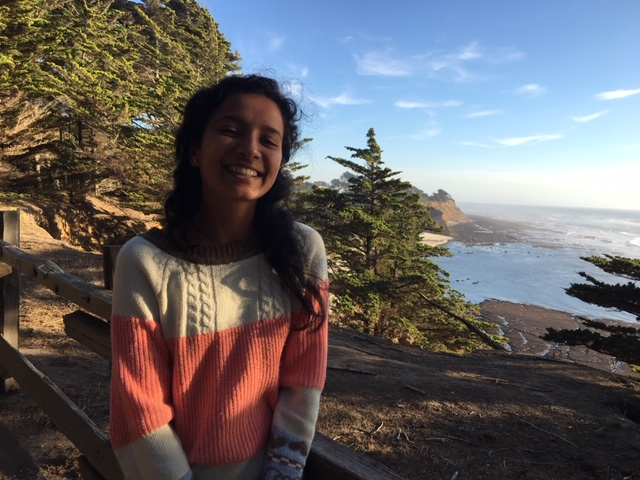

 I'm a third-year PhD student at Paul G. Allen School of Computer Science and Engineering, co-advised by Dr. Jennifer Mankoff and Dr. Richard Ladner. Broadly, my research is in the area of accessibility and human-computer interaction. I like to explore ways in which technology and people can mediate access, particularly in communication contexts, and imagine how we can move towards sustainable accessibility that centers lived experiences of people with disabilities.
In 2020, I graduated from University of Delaware with Bachelors of Science in Computer Science and Cognitive Science, where I was advised by Dr. Debra Yarrington and Dr. Giovanna Morini. I'm also a UD Women's Golf Alumna!